Dataflow Triggers (a.k.a. Event Framework)
Dataflow Triggers Overview
Dataflow triggers are instructions for the event framework to kick off tasks in response to events that occur in the pipeline. For example, you can use dataflow triggers to start a MapReduce job after the pipeline writes a file to HDFS. Or you might use a dataflow trigger to stop a pipeline after the JDBC Query Consumer origin processes all available data.
- event generation
- The event framework generates pipeline-related events and stage-related events. The framework generates pipeline events only when the pipeline starts and stops. The framework generates stage events when specific stage-related actions take place. The action that generates an event differs from stage to stage and is related to how the stage processes data.
- For example, the Hive Metastore destination updates the Hive metastore, so it generates events each time it changes the metastore. In contrast, the Hadoop FS destination writes files to HDFS, so it generates events each time it closes a file.
- Events produce event records. Pipeline-related event records are passed immediately to the specified event consumer. Stage-related event records are passed through the pipeline in an event stream.
- task execution
- To trigger a task, you need an executor. Executor stages perform tasks in Data Collector or external systems. Each time an executor receives an event, it performs the specified task.
- For example, the Hive Query executor runs user-defined Hive or Impala queries each time it receives an event, and the MapReduce executor triggers a MapReduce job when it receives events. Within Data Collector, the Pipeline Finisher executor stops a pipeline upon receiving an event, transitioning the pipeline to a Finished state.
- event storage
- To store event information, pass the event to a destination. The destination writes the event records to the destination system, just like any other data.
- For example, you might store event records to keep an audit trail of the files that the pipeline origin reads.
Pipeline Event Generation
The event framework generates pipeline events at specific points in the pipeline lifecycle. You can configure the pipeline properties to pass each event to an executor or to another pipeline for more complex processing.
- Pipeline Start
- The pipeline start event is generated as the pipeline initializes, immediately after it starts and before individual stages are initialized. This can allow time for an executor to perform a task before stages initialize.
- Most executors wait for confirmation that a task completes. As a result, the pipeline waits for the executor to complete the task before continuing with stage initialization. For example, if you configure the JDBC Query executor to truncate a table before the pipeline begins, the pipeline waits until the task is complete before processing any data.
-
The MapReduce executor and Spark executor kick off jobs and do not wait for the submitted jobs to complete. When you use one of these executors, the pipeline waits only for successful job submission before continuing with stage initialization.
If the executor fails to process the event, for example if a Hive Query Executor fails to execute the specified query or if the query fails, then the initialization phase fails and the pipeline does not start. Instead the pipeline transitions to a failure state.
- Pipeline Stop
- The pipeline stop event is generated as the pipeline stops, either manually, programmatically, or due to a failure. The stop event is generated after all stages have completed processing and cleaning up temporary resources, such as removing temporary files. This allows an executor to perform a task after pipeline processing is complete, before the pipeline fully stops.
-
Similar to start event consumers, the behavior of the executor that consumes the event determines whether the pipeline waits for the executor task to complete before allowing the pipeline to stop. Also, if the processing of the pipeline stop event fails for any reason, the pipeline transitions to a failed state even though the data processing was successful.
- Virtual processing - Unlike stage events, pipeline events are not
processed by stages that you configure in the canvas. They are passed to an
event consumer that you configure in the pipeline properties.
The event consumer does not display in the pipeline’s canvas. As a result, pipeline events are also not visualized in data preview or pipeline monitoring.
- Single-use events - You can configure only one event consumer for each
event type within the pipeline properties: one for the Start event and one for
the Stop event.
When necessary, you can pass pipeline events to another pipeline. In the event consuming pipeline, you can include as many stages as you need for more complex processing.
For a case study that describes a couple ways to use pipeline events, see Case Study: Offloading Data from Relational Sources to Hadoop.
Using Pipeline Events
You can configure pipeline events to be consumed by an executor or another pipeline.
Pass an event to an executor when the executor can perform all of the tasks that you need. You can configure one executor for each event type.
Pass an event to another pipeline when you need to perform more complex tasks in the consuming pipeline, such as passing the event to multiple executors or to an executor and destination for storage.
Pass to an Executor
You can configure a pipeline to pass each event type to an executor stage. This allows you to trigger a task when the pipeline starts or stops. You configure the behavior for each event type separately. And you can discard any event that you do not want to use.
- In the pipeline properties, select the executor that you want to consume the event.
- In the pipeline properties, configure the executor to perform the task.
Example
Say you want to send an email when the pipeline starts. First, you configure the pipeline to use the Email executor for the pipeline start event. Since you don't need the Stop event, you can simply use the default discard option:

Then, also in the pipeline properties, you configure the Email executor. You can configure a condition for the email to be sent. If you omit the condition, the executor sends the email each time it receives an event:
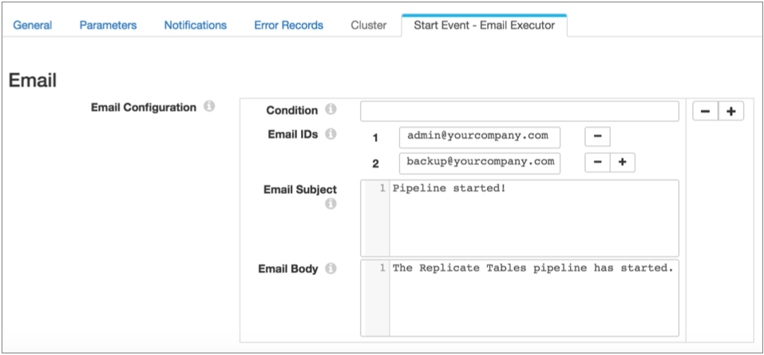
Pass to Another Pipeline
Pass pipeline events to another pipeline to perform more complex processing than simply passing the event to a single consumer. The event-consuming pipeline must use the SDC RPC origin, then can include as many other stages as you require.
To achieve the same behavior as passing to an executor, where a processing failure causes the event-generating pipeline to fail, configure the relevant stages to stop the event-consuming pipeline upon error. Upon error, the event-consuming pipeline then stops and passes the message back to the event-generating pipeline, which then transitions to a failure state.
For example, say you pass a pipeline event to a pipeline that routes the event to two executors. To ensure that the event-generating pipeline fails if either of the executors fail, configure the On Record Error property on the General tab of both executors, setting the property to Stop Pipeline.
This causes the event-consuming pipeline to stop on error, which causes the event-generating pipeline to transition to a failure state.
- Configure the pipeline to consume the event.
- Configure the event-generating pipeline to pass the event to the event-consuming pipeline, including details from the SDC RPC origin.
- Start the event-consuming pipeline before you start the event-generating pipeline.
Example
Say you want the Stop event to trigger a shell script that kicks off another process and a JDBC query. To do this, first configure the event-consuming pipeline. Use an SDC RPC origin and note the highlighted properties, because you will use them to configure the event-generating pipeline:

Then you configure the event-generating pipeline to pass the Stop event to your new pipeline. Note that if you don't need to use the Start event, you can simply use the default discard option:
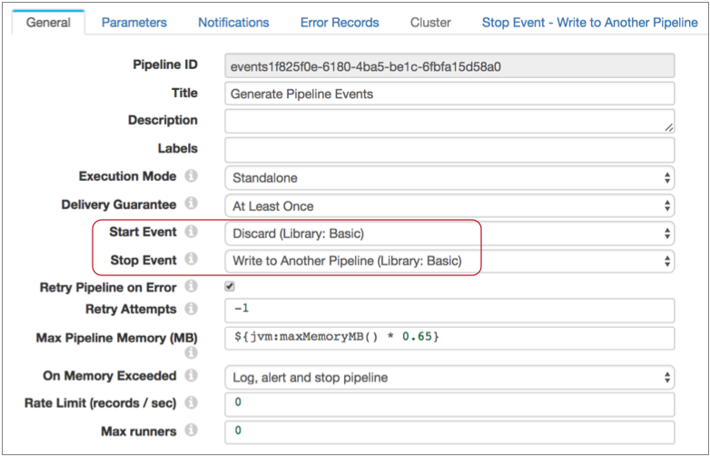
Then you configure the Stop Event - Write to Another Pipeline properties, using the SDC RPC details from your event-consuming pipeline:

Stage Event Generation
You can configure certain stages to generate events. Event generation differs from stage to stage, based on the way the stage processes data. For details about each the event generation for each stage, see "Event Generation" in the stage documentation.
| Stage | Generates events when the stage... |
|---|---|
| Directory origin |
For more information, see "Event Generation" for the Directory origin. |
| File Tail origin |
For more information, see "Event Generation" for the File Tail origin. |
| Google BigQuery |
For more information, see "Event Generation" for the Google BigQuery origin. |
| JDBC Query Consumer origin |
For more information, see "Event Generation" for the JDBC Query Consumer origin. |
| JDBC Multitable Consumer origin |
For more information, see "Event Generation" for the JDBC Multitable Consumer origin. |
| Oracle CDC Client origin |
For more information, see "Event Generation" for the Oracle CDC Client origin. |
| Salesforce origin |
For more information, see "Event Generation" for the Salesforce origin. |
| SQL Server CDC Client origin |
For more information, see "Event Generation" for the SQL Server CDC Client origin. |
| SQL Server Change Tracking origin |
For more information, see "Event Generation" for the SQL Server Change Tracking origin. |
| Groovy Evaluator processor |
For more information, see "Event Generation" for the Groovy Evaluator processor. |
| JavaScript Evaluator processor |
For more information, see "Event Generation" for the JavaScript Evaluator processor. |
| Jython Evaluator processor |
For more information, see "Event Generation" for the Jython Evaluator processor. |
| Amazon S3 destination |
For more information, see "Event Generation" for the Amazon S3 destination. |
| Azure Data Lake Store destination |
For more information, see "Event Generation" for the Azure Data Lake Store destination. |
| Hadoop FS destination |
For more information, see "Event Generation" for the Hadoop FS destination. |
| Hive Metastore destination |
For more information, see "Event Generation" for the Hive Metastore destination. |
| Local FS destination |
For more information, see "Event Generation" for the Local FS destination. |
| MapR FS destination |
For more information, see "Event Generation" for the MapR FS destination. |
| HDFS File Metadata executor |
For more information, see "Event Generation" for the HDFS File Metadata executor. |
| Hive Query executor |
For more information, see "Event Generation" for the Hive Query executor. |
| MapR FS File Metadata executor |
For more information, see "Event Generation" for the MapR FS File Metadata executor. |
| MapReduce executor |
For more information, see "Event Generation" for the MapReduce executor. |
| Spark executor |
For more information, see "Event Generation" for the Spark executor. |
Using Stage Events
You can use stage-related events in any way that suits your needs. When configuring the event stream for stage events, you can add additional stages to the stream. For example, you might use a Stream Selector to route different types of events to different executors. But you cannot merge the event stream with a data stream.
- Task execution streams that route events to an executor to perform a task.
- Event storage streams that route events to a destination to store event information.
Task Execution Streams
A task execution stream routes event records from the event-generating stage to an executor stage. The executor performs a task each time it receives an event record.
For example, you have a pipeline that reads from Kafka and writes files to HDFS:
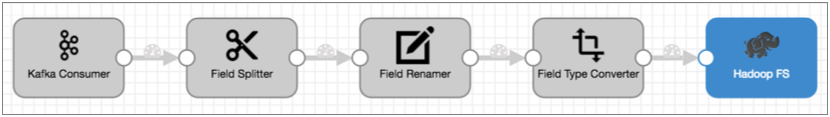
When Hadoop FS closes a file, you would like the file moved to a different directory and the file permissions changed to read-only.
Leaving the rest of the pipeline as is, you can enable event handling in the Hadoop FS destination, connect it to the HDFS File Metadata executor, and configure the HDFS File Metadata executor to files and change permissions. The resulting pipeline looks like this:

If you needed to set permissions differently based on the file name or location, you could use a Stream Selector to route the event records accordingly, then use two HDFS File Metadata executors to alter file permissions, as follows:
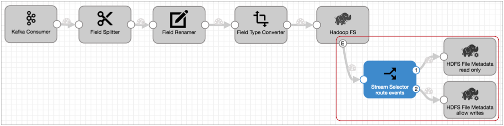
Event Storage Streams
An event storage stream routes event records from the event-generating stage to a destination. The destination writes the event record to a destination system.
Event records include information about the event in record header attributes and record fields. You can add processors to the event stream to enrich the event record before writing it to the destination.
For example, you have a pipeline that uses the Directory origin to process weblogs:

Directory generates event records each time it starts and completes reading a file, and the event record includes a field with the file path of the file. For auditing purposes, you'd like to write this information to a database table.
Leaving the rest of the pipeline as is, you can enable event handling for the Directory origin and simply connect it to the JDBC Producer as follows:
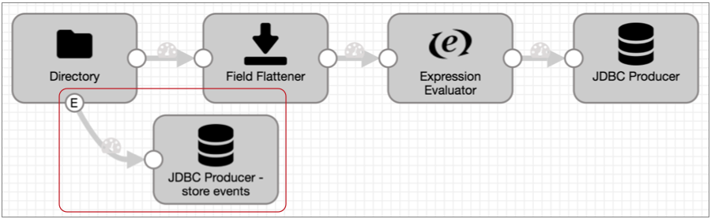
${record:attribute('sdc.event.creation_timestamp')}
${pipeline:name()}
The Expression Evaluator and the final pipeline looks like this:

Executors
- Amazon S3 executor
- Creates new Amazon S3 objects for the specified content or adds tags to existing Amazon S3 objects upon receiving an event.
- You can use the executor in any logical way, such as writing information from an event record to an S3 object or tagging objects after they are written by the Amazon S3 destination.
- Email executor
- Sends a custom email to the configured recipients upon receiving an event. You can optionally configure a condition that determines when to send the email.
- You can use the executor in any logical way, such as sending an email each time the Azure Data Lake Store destination completes streaming a whole file.
- Hive Query executor
- Executes user-defined Hive or Impala queries for each event.
- You can use the executor in any logical way, such as running Hive or Impala queries after the Hive Metadata destination updates the Hive metastore, or after the Hadoop FS or MapR FS destination closes files.
- For example, you might use the Hive Query executor as part of the Drift Synchronization Solution for Hive if you read data with Impala. Impala requires you to run the Invalidate Metadata command when the table structure or data changes.
- Instead of trying to time this action manually, you can use the Hive Query executor to submit the command automatically each time the Hive Metastore destination changes the structure of a table and each time the Hadoop FS destination closes a file.
- HDFS File Metadata executor
- Changes file metadata, creates an empty file, or removes a file or directory
from HDFS or a local file system upon receiving an event.
When changing file metadata, the executor can rename and move files in addition to specifying the owner and group, and updating permissions and ACLs for files. When creating an empty file, the executor can specify the owner and group and set permissions and ACLs for the file. When removing files and directories, the executor performs the task recursively.
- You can use the executor in any logical way, such as changing file metadata after receiving file closure events from the Hadoop FS or Local FS destinations.
- Pipeline Finisher executor
- Stops the pipeline when it receives an event, transitioning the pipeline to a Finished state. Allows the pipeline to complete all expected processing before stopping.
- You can use the Pipeline Finisher in any logical way, such as stopping a pipeline upon receiving a no-more-data event from the JDBC Query Consumer origin. This enables you to achieve "batch" processing - stopping the pipeline when all available data is processed rather than leaving the pipeline to sit idle indefinitely.
- For example, you might use the Pipeline Finisher executor with the JDBC Multitable Consumer to stop the pipeline when it processes all queried data in the specified tables.
- JDBC Query executor
- Connects to a database using JDBC and runs the specified SQL query.
- Use to run a SQL query on a database after an event occurs.
- MapR FS File Metadata executor
- Changes file metadata, creates an empty file, or removes a file or directory in MapR FS upon receiving an event. When changing file metadata, the executor can rename and move files in addition to specifying the owner and group, and updating permissions and ACLs for files. When creating an empty file, the executor can specify the owner and group and set permissions and ACLs for the file. When removing files and directories, the executor performs the task recursively.
- You can use the executor in any logical way, such as creating an empty file after the MapR FS destination closes a file.
- MapReduce executor
- Connects to HDFS or MapR FS and starts a MapReduce job for each event.
- You can use the executor in any logical way, such as running MapReduce jobs after the Hadoop FS or MapR FS destination closes files. For example, you might use the MapReduce executor with the Hadoop FS destination to convert Avro files to Parquet when Hadoop FS closes a file.
- Shell executor
- Executes a user-defined shell script for each event.
- Spark executor
- Connects to Spark on YARN or Databricks and starts a Spark application for each event.
- You can use the executor in any logical way, such as running Spark applications after the Hadoop FS, MapR FS, or Amazon S3 destination closes files. For example, you might use the Spark executor with the Hadoop FS destination to convert Avro files to Parquet when Hadoop FS closes a file.
Logical Pairings
You can use events in any way that works for your needs. The following tables outline some logical pairings of event generation with executors and destinations.
Pipeline Events
| Pipeline Event Type | Event Consumer |
|---|---|
| Pipeline Start |
|
| Pipeline Stop |
|
Origin Events
| Event Generating Origin | Event Consumer |
|---|---|
| Directory |
|
| File Tail |
|
| Google BigQuery |
|
| JDBC Multitable Consumer |
|
| JDBC Query Consumer |
|
| Oracle CDC Client |
|
| Salesforce |
|
| SQL Server Change Tracking |
|
Processor Events
| Event Generating Processor | Event Consumer |
|---|---|
| Groovy Evaluator |
|
| JavaScript Evaluator |
|
| Jython Evaluator |
|
Destination Events
| Event Generating Destination | Event Consumer |
|---|---|
| Amazon S3 |
|
| Azure Data Lake Store |
|
| Hadoop FS |
|
| Hive Metastore |
|
| Local FS |
|
| MapR FS |
|
Executor Events
| Event Generating Executor | Event Consumer |
|---|---|
| HDFS File Metadata executor |
|
| Hive Query executor |
|
| MapR FS File Metadata executor |
|
| MapReduce executor |
|
| Spark executor |
|
Event Records
Event records are records that are created when a stage or pipeline event occurs.
Most event records pass general event information in record headers, such as when the event occurred. They also can include event-specific details in record fields, like the name and location of the output file that was closed.
Event records generated by the File Tail origin are the exception - they include all event information in record fields.
Event Record Header Attributes
In addition to the standard record header attributes, most event records include record header attributes for event information such as the event type and when the event occurred.
${record:attribute('sdc.event.creation_timestamp')}
Note that all record header attributes are String values. For more information about working with record header attributes, see Record Header Attributes.
| Event Record Header Attribute | Description |
|---|---|
| sdc.event.type | Event type. Defined by the stage that generates the event. For information about the event types available for an event generating stage, see the stage documentation. |
| sdc.event.version | An integer that indicates the version of the event record type. |
| sdc.event.creation_timestamp | Epoch timestamp when the stage created the event. |
Viewing Events in Data Preview, Snapshot, and Monitor Mode
When generated, stage events display in data preview, Monitor mode, and snapshot as event records. Once a record leaves the event-generating stage, it is treated like a standard record.
Pipeline events generated by the event framework do not display in data preview or monitor mode. However, you can enable data preview to generate and process pipeline events.
Viewing Stage Events in Data Preview and Snapshot
In data preview and when reviewing snapshots of data, stage-related event records display in the event-generating stage marked as "event records," and they appear below the batch of standard records.
After leaving the stage, the record displays like any other record.
For example, the Directory origin below generates an event record as it starts reading a file for data preview:
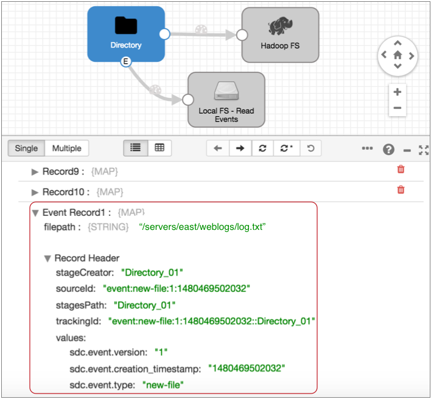
When you select the Local FS destination where the event record is written, you see that the same event record no longer displays the event record label. It is treated like any other record:
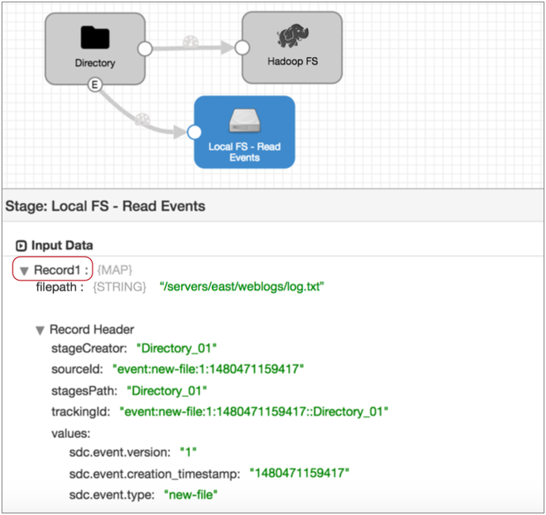
Viewing Stage Events in Monitor Mode
In Monitor mode, the event-generating stage provides statistics about stage-related event records. Once the event records leave the stage, Monitor mode treats event records like any other record.
For example, when you run and monitor the pipeline featured above, the Directory origin information displays event records in its statistics:
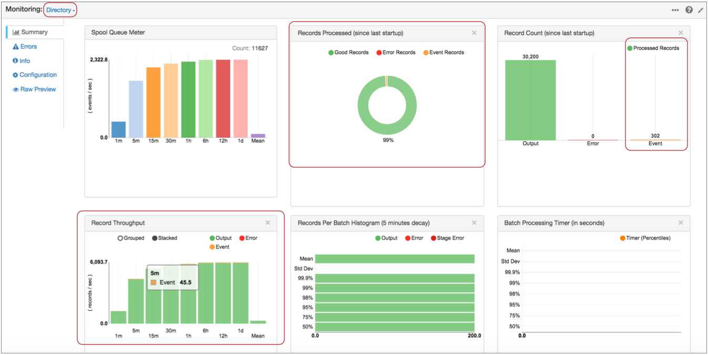
Notice, in the Record Throughput chart, that you can hover over graphics to get the exact number of records that they represent.
And when you select the Local FS destination where the event record is written, Monitor mode displays statistics for the records written to the destination. At this point, the event records are treated like any other record:

Executing Pipeline Events in Data Preview
You can enable pipeline event execution in data preview to test event processing.
When you enable pipeline event generation while previewing data, the event framework generates the pipeline start event when you start data preview and the stop event when you stop data preview. If you configured the pipeline to pass the events to executors or to event-consuming pipelines, the events are passed and trigger the additional processing.
To enable generating pipeline event execution during data preview, use the Enable Pipeline Execution data preview property.
Case Study: Parquet Conversion
Say you want to store data on HDFS using the columnar format, Parquet. But Data Collector doesn't have a Parquet data format. How do you do it?
The event framework was created for exactly this purpose. The simple addition of an event stream to the pipeline enables the automatic conversion of Avro files to Parquet.
You can use the Spark executor to trigger a Spark application or the MapReduce executor to trigger a MapReduce job. This case study uses the MapReduce executor.
It's just a few simple steps:
- Create the pipeline you want to use.
Use the origin and processors that you need, like any other pipeline. And then, configure Hadoop FS to write Avro data to HDFS.
The Hadoop FS destination generates events each time it closes a file. This is perfect because we want to convert files to Parquet only after they are fully written.
Note: To avoid running unnecessary numbers of MapReduce jobs, configure the destination to create files as large as the destination system can comfortably handle. - Configure Hadoop FS to generate events.
On the General tab of the destination, select the Produce Events property.
With this property selected, the event output stream becomes available and Hadoop FS generates an event record each time it closes an output file. The event record includes the file path for the closed file.

- Connect the Hadoop FS event output stream to a MapReduce executor.
Now, each time the MapReduce executor receives an event, it triggers the jobs that you configure it to run.
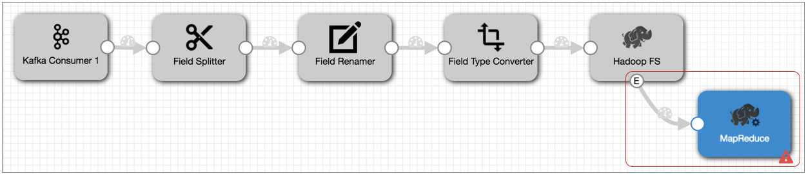
- Configure the MapReduce executor to run a job that converts the completed Avro
file to Parquet.
In the MapReduce executor, configure the MapReduce configuration details and select the Avro to Parquet job type. Then, on the Avro to Parquet tab, configure the details for the job.
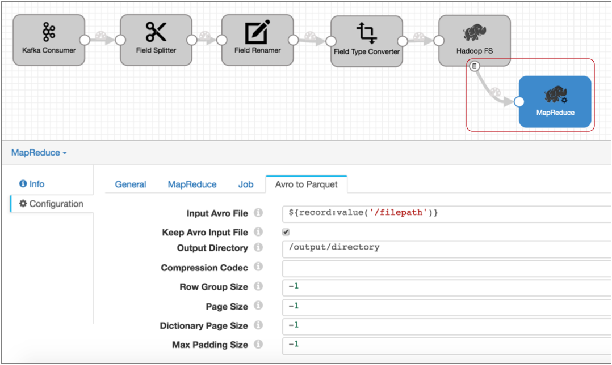
The Input Avro File property default, ${record:value('/filepath')}, runs the job on the file specified in the Hadoop FS file closure event record.
With this event stream added to the pipeline, each time the Hadoop FS destination closes a file, it generates an event. When the MapReduce executor receives the event, it kicks off a MapReduce job that converts the Avro file to Parquet. Simple!
Case Study: Impala Metadata Updates for DDS for Hive
You love the Drift Synchronization Solution for Hive because it automatically updates the Hive metastore when needed. But if you've been using it with Impala, you've been trying to time the Invalidate Metadata command after each metadata change and file write.
Instead of running the command manually, you use the event framework in your Drift Synchronization Solution for Hive pipeline to execute the command automatically.
Enable both the Hive Metastore destination and the Hadoop FS destination to generate events. You can connect both event streams to a single Hive Query executor. The executor then runs the Invalidate Metadata command each time the Hive Metastore destination changes the Hive metastore and each time Hadoop FS writes a file to a Hive table.
Here's how it works:
The following Drift Synchronization Solution for Hive pipeline reads files from a directory. The Hive Metadata processor evaluates the data for structural changes. It passes data to Hadoop FS and metadata records to the Hive Metastore destination. Hive Metastore creates and updates tables in Hive based on the metadata records it receives:

- Configure the Hive Metastore destination to generate events.
On the General tab, select the Produce Events property.
Now, the event output stream becomes available, and Hive Metastore destination generates an event record every time it updates the Hive metastore. The event record contains the name of the table that was created or updated.
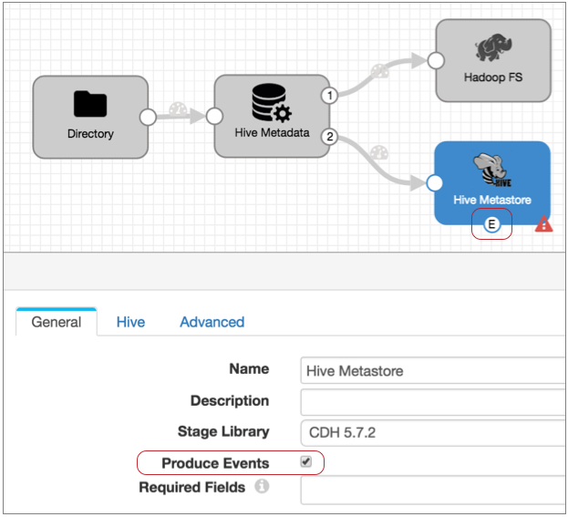
- We also need to add an event stream to the Hadoop FS destination so we can run
the Invalidate Metadata command each time the destination writes a file to Hive.
So in the Hadoop FS destination, on the General tab, select
Produce Events.
With this property selected the event output stream becomes available, and Hadoop FS generates an event record every time it closes a file:

- The event record generated by the Hadoop FS destination does not include the
table name required by the Hive Query executor, but it contains the table name
in the file path. So add an Expression Evaluator processor to the event stream.
Create a new Table field and use the following
expression:
`${file:pathElement(record:value('/filepath'), -3)}`.`${file:pathElement(record:value('/filepath'), -2)}`This expression uses the path in the Filepath field of the event record and performs the following calculations:- Extracts the third-to-last section of the path and uses it as the database name.
- Extracts the second-to-last section of the path and uses it as the table name.
So when Hadoop FS completes a file, it writes the path of the written file in the filepath field, such as users/logs/server1weblog.txt. And the expression above properly interprets the database and table name as: logs.server1weblog.
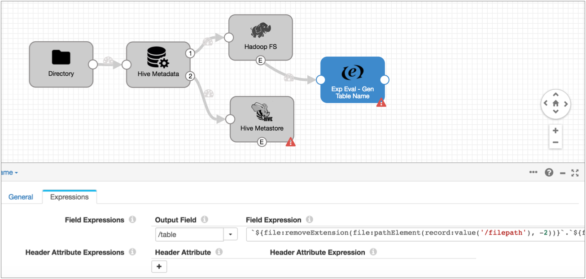
- Add the Hive Query executor and connect the Hive Metastore destination and the
Expression Evaluator to the executor. Then configure the Hive Query executor.Note: To use the Hive Query executor with Impala, you need to use the Impala JDBC driver. By default, Data Collector uses an open source Hive JDBC driver. So if you haven't already, download the driver from Cloudera , then install the driver. Note that the download page also includes a link to documentation for the driver.
Once the Impala JDBC driver is installed, in the Hive Query executor, configure the Hive configuration details on the Hive tab. If you have any trouble configuring the URL, see the Impala driver information in our Ask StreamSets post.
Then, on the Query tab, enter the following query:invalidate metadata ${record:value('/table')}This query refreshes the Impala cache for the specified table. And the table is either the table in the Hive Metastore event record that was just updated or the table where Hadoop FS wrote a file.
Here's the final pipeline:
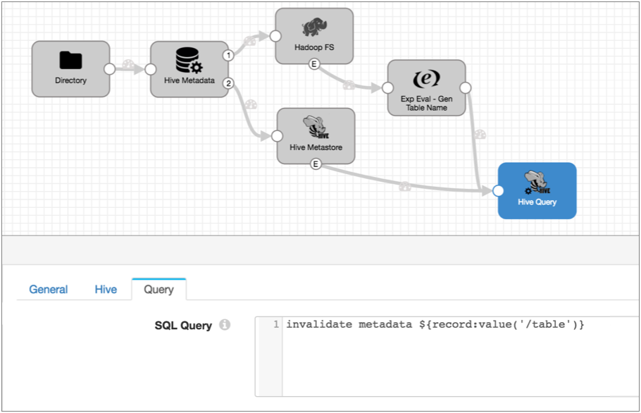
With these new event streams, each time the Hive Metastore destination creates a table, partition or column, and each time the Hadoop FS destination completes writing a file, the destinations generate event records. When the Hive Query executor receives an event record, it runs the Invalidate Metadata command so Impala can update its cache with the new information. Done!
Case Study: Output File Management
By default, the Hadoop FS destination creates a complex set of directories for output files and late record files, keeping files open for writing based on stage configuration. That's great, but once the files are complete, you'd like the files moved to a different location. And while you're at it, it would be nice to set the permissions for the written files.
So what do you do?
Here's a pipeline that reads from a database using JDBC, performs some processing, and writes to HDFS:
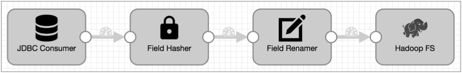
- To add an event stream, first configure Hadoop FS to generate events:
On the General tab of the Hadoop FS destination, select the Produce Events property.
Now, the event output stream becomes available, and Hadoop FS generates an event record each time it closes an output file. The Hadoop FS event record includes fields for the file name, path, and size.
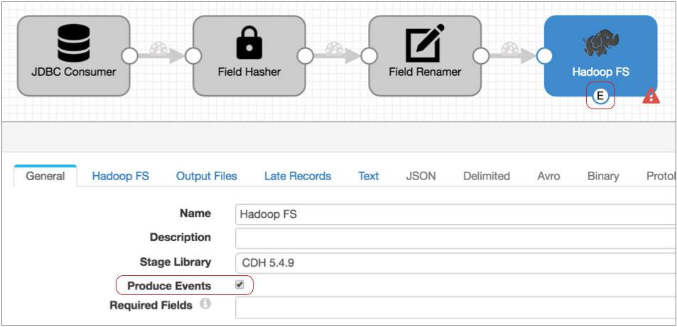
- Connect the Hadoop FS event output stream to a HDFS File Metadata executor.
Now, each time the HDFS File Metadata executor receives an event, it triggers the tasks that you configure it to run.
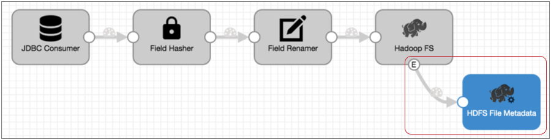
- Configure the HDFS File Metadata executor to move the files to the directory that
you want and set the permissions for the file.
In the HDFS File Metadata executor, configure the HDFS configuration details on the HDFS tab. Then, on the Tasks tab, select Change Metadata on Existing File configure the changes that you want to make.
In this case, you want to move files to /new/location, and set the file permissions to 0440 to allow the user and group read access to the files:

With this event stream added to the pipeline, each time the Hadoop FS destination closes a file, it generates an event record. When the HDFS File Metadata executor receives the event record, it moves the file and sets the file permissions. No muss, no fuss.
Case Study: Stop the Pipeline
Say your dataflow topology updates a database table daily at 4 am. Rather than have the pipeline process the data in a few minutes and sit idle for the rest of the day, you want to kick off the pipeline, have it process all data and then stop - just like old school batch processing. And you'd like to have the pipeline let you know when it has stopped.
To do this, simply route the no-more-data event record to the Pipeline Finisher executor and configure notification.
- Directory origin
- JDBC Query Consumer origin
- JDBC Multitable Consumer origin
- Salesforce origin
- SQL Server CDC Client origin
- SQL Server Change Tracking origin
We'll use the JDBC Query Consumer to show a more complex scenario.
Here's the basic pipeline that reads from a database, performs some processing, and writes to HDFS:
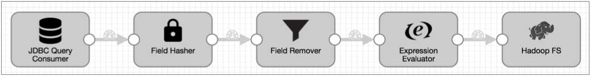
- Configure the origin to generate events:
On the General tab of the JDBC Query Consumer origin, select the Produce Events property.
The event output stream becomes available:
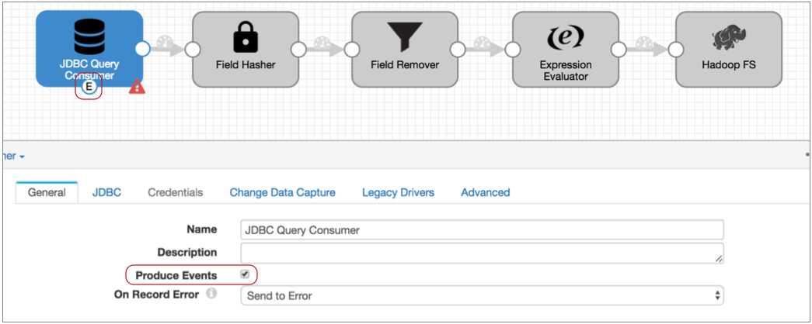
The JDBC Query Consumer generates several types of events: query success, query failure, and no-more-data. We know this because you checked the Event Record section of the JDBC Query Consumer documentation. Every event-generating stage has event details in a similar section.
The query success and failure events can be useful, so you might use a Stream Selector to route those records to a separate event stream. But let's say we don't care about those events, we just want the no-more-data event to pass to the Pipeline Finisher executor.
- Connect the event output stream to the Pipeline Finisher executor.
At this point, all events that the origin generates come to the executor. Since the JDBC Query Consumer origin generates multiple event types, this setup might cause the executor to stop the pipeline too soon.
- To ensure that only the no-more-data event enters the executor, configure a
precondition.
With a precondition, only records that meet the specified condition can enter the stage.
We know that each event record includes the event type in the sdc.event.type record header attribute. So to ensure that only no-more-data events enter the stage, we can use the following expression in the precondition:
${record:eventType() == 'no-more-data'} - Records that don't meet the precondition go to the stage for error handling, so
to avoid storing error records that we don't care about – that is, the query
success and failure events – let's also set the On Record
Error property to Discard.
So here's the Pipeline Finisher:
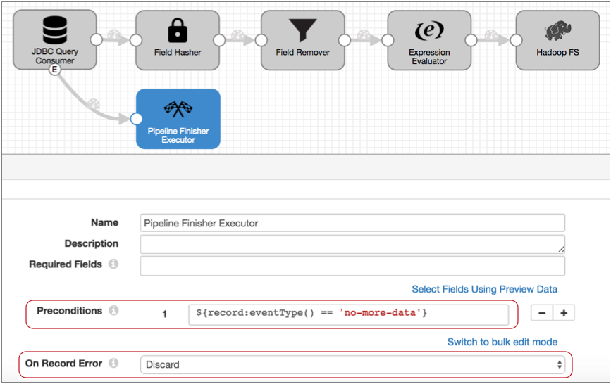
- Now, to get notified when the Pipeline Finisher stops the pipeline, configure
the pipeline to send an email when the pipeline state changes to Finished.
You can use this option when Data Collector is set up to send email. You can alternatively use the pipeline state notification to send a webhook, or use an Email executor in the pipeline to send a customized email. Since we only need a simple notification, let's send a basic email based on the pipeline state:
- Click in the canvas to view the pipeline configuration, and click the Notifications tab.
- In the Notify on Pipeline State Changes, leave the Finished state and remove the other default states.
- Then, enter the email addresses to receive the email:

With this setup, the JDBC Query Consumer passes a no-more-data event when it completes processing all data returned by the query, and the Pipeline Finisher executor stops the pipeline and transitions the pipeline to a Finished state. All other events generated by the origin are discarded. Data Collector sends notification so you know when the pipeline finishes, and the next time you want to process more data, you can just start the pipeline again.
Case Study: Offloading Data from Relational Sources to Hadoop
Say you want to batch-load data from a set of database tables to Hive, basically replacing an old Apache Sqoop implementation. Before processing new data, you want to delete the previous tables. And you'd like to create a notification file when the pipeline stops to trigger subsequent actions from other applications, like a _SUCCESS file to launch a MapReduce job.
- Batch processing
-
To perform batch processing, where the pipeline stops automatically after all processing is complete, you use an origin that creates the no-more-data event, and you pass that event to the Pipeline Finisher executor. We'll step through this quickly, but for a case study centered on the Pipeline Finisher, see Case Study: Stop the Pipeline.
To process database data, we can use the JDBC Multitable Consumer - it generates the no-more-data event and can spawn multiple threads for greater throughput. For a list of origins that generate the no-more-data event, see Related Event Generating Stages in the Pipeline Finisher documentation.
- Remove existing data before processing new data
- To perform tasks before the pipeline starts processing data, use the pipeline start event. So, for example, if you wanted to run a shell command to perform a set of tasks before the processing begins, you could use the Shell executor.
- To truncate Hive tables, we'll use the Hive Query executor.
- Create a notification file when the pipeline stops
- Use the pipeline stop event to perform tasks after all processing completes, before the pipeline comes to a full stop. To create an empty success file, we'll use the HDFS File Metadata executor.
- First create the pipeline that you want to use.
We use the JDBC Multitable Consumer in the following simple pipeline, but your pipeline can be as complex as needed.

- To set up batch processing, enable event generation in the origin by selecting
the Produce Events property on the
General tab. Then, connect the event output stream to
the Pipeline Finisher executor.
Now, when the origin completes processing all data, it passes a no-more-data event to the Pipeline Finisher. And after all pipeline tasks are complete, the executor stops the pipeline.
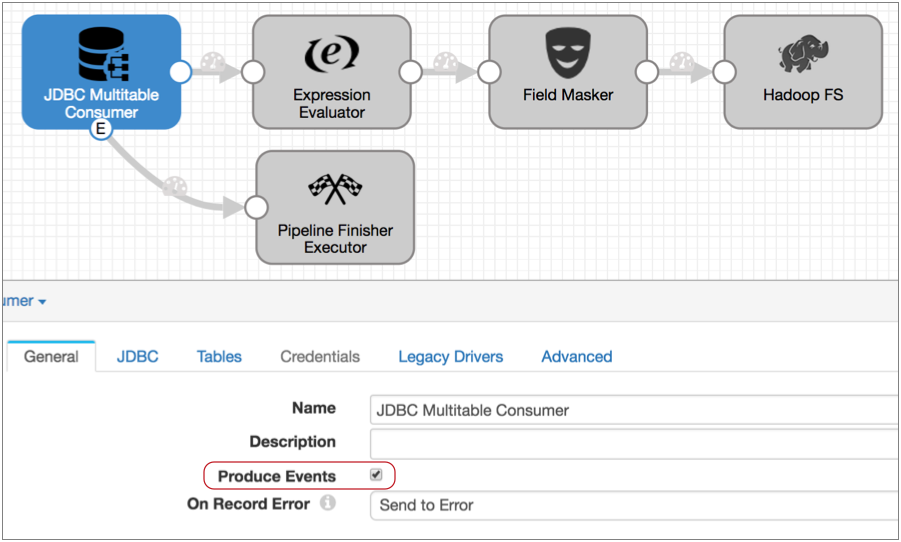
Note: The JDBC Multitable Consumer origin generates only the no-more-data event, so you don't need to use a Stream Selector or executor precondition to manage other event types. But if the origin you want to use generates additional event types, you should ensure that only the no-more-data event is routed to the Pipeline Finisher. For details, see the Stop the Pipeline case study. - To truncate Hive tables before processing begins, configure the pipeline to pass
the pipeline start event to the Hive Query executor.
To do this, on the General tab, you configure the Start Event property, selecting the Hive Query executor as follows:
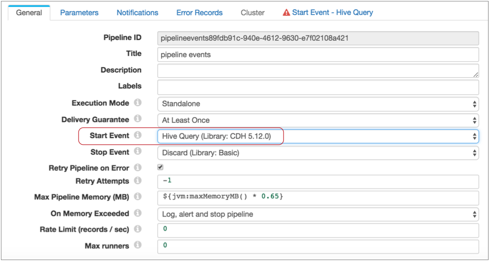
Notice, a Start Event - Hive Query tab now displays. This is because the executors for pipeline start and stop events do not display in the pipeline canvas - you configure the selected executor as part of the pipeline properties.
Also note that you can pass each type of pipeline event to one executor or to another pipeline for more complex processing. For more information about pipeline events, see Pipeline Event Generation.
- To configure the executor, click the Start Event - Hive
Query tab.
You configure the connection properties as needed, then specify the query to use. In this case, you can use the following query, filling in the table name:
TRUNCATE TABLE IF EXISTS <table name>
Also, select Stop on Query Failure. This ensures that the pipeline stops and avoids performing any processing when the executor cannot complete the truncate query. The properties should look like this:

With this configuration, when you start the pipeline, the Hive Query executor truncates the specified table before data processing begins. And when the truncate completes successfully, the pipeline begins processing.
- Now, to generate a success file after all processing is complete, you perform
similar steps with the Stop Event property.
Configure the pipeline to pass the pipeline stop event to the HDFS File Metadata executor as follows:

- Then, on the Stop Event - HDFS File Metadata tab, specify
the connection information and configure the executor to create the success file
in the required directory with the specified name.

With these configurations in place, when you start the pipeline, the Hive Query executor truncates the table specified in the query, then pipeline processing begins. When the JDBC Multitable Consumer completes processing all available data, it passes a no-more-date event to the Pipeline Finisher executor.
The Pipeline Finisher executor allows the pipeline stop event to trigger the HDFS File Metadata executor to create the empty file, then brings the pipeline to a graceful stop. Batch job complete!
Case Study: Sending Email
You can configure a pipeline to send email upon pipeline state change and upon triggering an alert. Both methods can be useful in their own way. In this case study, we'll use an Email executor to send email upon receiving an event.
Say you have a pipeline that reads from a database using the JDBC Query Consumer origin, uses a Jython Evaluator to evaluate the data and generate events for invalid transactions, and writes to HDFS. You want this pipeline to send two types of email: one when the Jython Evaluator finds an invalid transaction and one when the JDBC Query Consumer fails to complete a query.
To do this, you simply route the events from the origin and processor to the Email executor and configure two email messages. The Email executor allows you to specify a condition for sending email and to use expressions to create customized email that provides event-related information to the recipient.
Say this is the original pipeline:

- First, configure the JDBC Query Consumer to generate events.
On the General tab of the origin, select the Produce Events property.
Now, the event output stream becomes available. Note that the JDBC Query Consumer generates several types of events. You know this because you checked the Event Record section of the JDBC Query Consumer documentation. Every event-generating stage has event details in a similar section.
- Now configure the Jython Evaluator to generate events in the same way.
Of course, the Jython Evaluator will only generate events if your script is set up to do so. But you also need to enable the Produce Events property on the General tab.
- Connect both event streams to an Email executor.
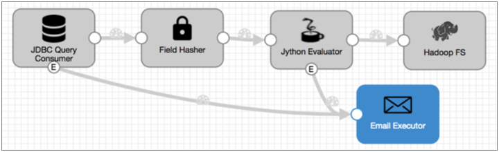
- Now since the JDBC Query Consumer generates several types of events, you need to
configure the Email executor to send the first email only after receiving a
query failure event:
- The query failure event has the jdbc-query-failure event type, so on the
Email tab, you use the following condition:
${record:eventType() == 'jdbc-query-failure'} - All of the email properties allow expressions, so for the email subject,
you might include the pipeline name as
follows:
Query failure in ${pipeline:title()}! - When you compose the email body, you might use additional expressions to
include information about the pipeline and information included in the
event record in the email.
Remember, the Event Record documentation lists all header attributes and fields in the event record, so you can refer to it when configuring the email. For more information about using expressions in email, see Using Expressions.
For this email, you might include the following information:Pipeline ${pipeline:title()} encountered an error. At ${time:millisecondsToDateTime(record:eventCreation() * 1000)}, the JDBC Query Consumer failed to complete the following query: ${record:value('/query')} Only the following number of rows were processed: ${record:value('/row-count')}
The email configuration looks like this:

- The query failure event has the jdbc-query-failure event type, so on the
Email tab, you use the following condition:
- Click the Add icon to configure the email for the Jython
Evaluator events.
Since you want to send an email for each event that the Jython Evaluator generates, for the condition, you can use the event type defined in the script. Let's say it's "invalidTransaction". As with the first email, you can include additional information about the pipeline and data from the event record in the email body, as follows:

When you run the pipeline, the specified email recipients receive custom messages each time the Email executor receives the specified events. And the email recipients can act on the information included in the email without further ado.
Case Study: Event Storage
Store event records to preserve an audit trail of the events that occur. You can store event records from any event-generating stage. For this case study, say you want to keep a log of the files written to HDFS by the following pipeline:
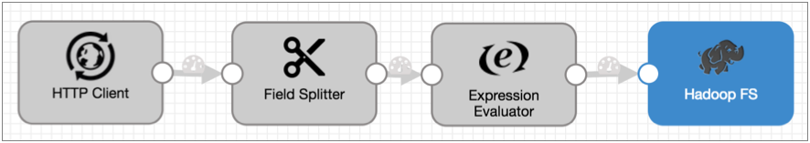
- Configure the Hadoop FS destination to generate events.
On the General tab, select the Produce Events property
Now the event output stream becomes available, and the destination generates an event each time it closes a file. For this destination, each event record includes fields for the file name, file path, and size of the closed file.
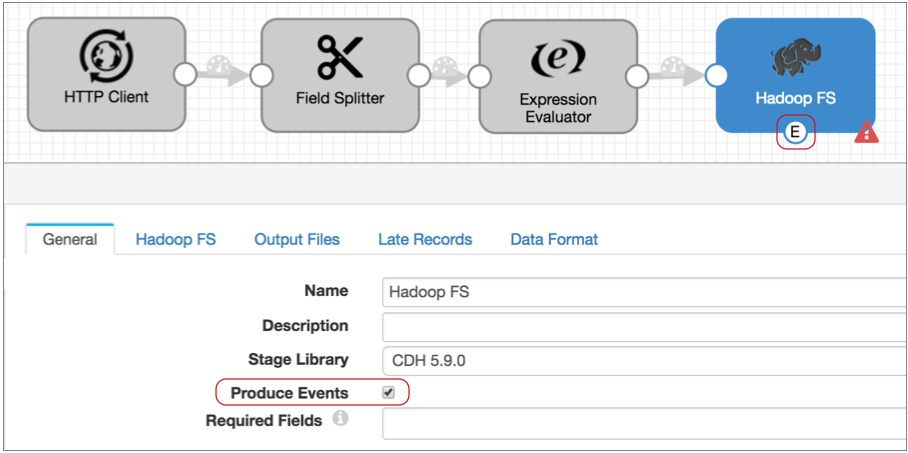
- You can write the event records to any destination, but let's assume you want to
write them to HDFS as well:
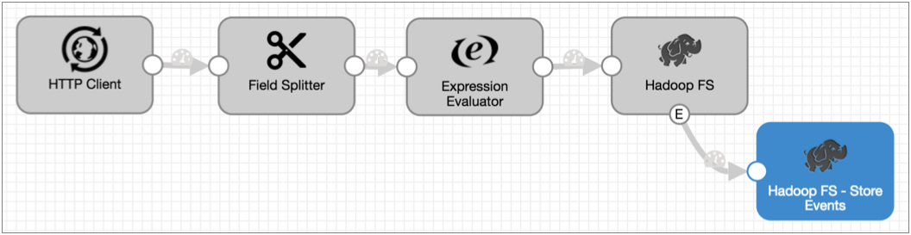
You could be done right there, but you want to include the time of the event in the record, so you know exactly when the Hadoop FS destination closed a file.
- All event records include the event creation time in the
sdc.event.creation_timestamp record header attribute, so you can add an
Expression Evaluator to the pipeline and use the following expression to include
the creation time in the
record:
${record:attribute('sdc.event.creation_timestamp')}The resulting pipeline looks like this:
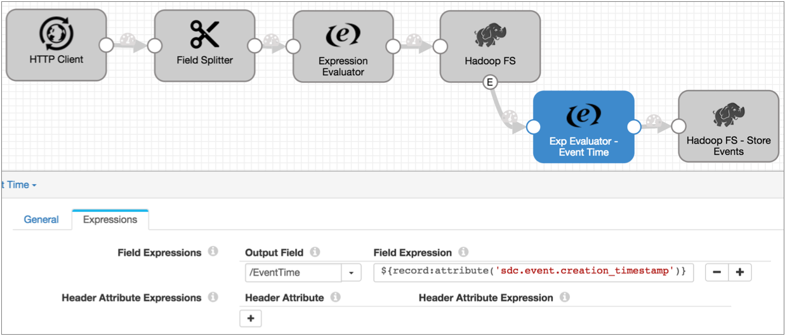
Note that event creation time is expressed as an epoch or Unix timestamp, such as 1477698601031. And record header attributes provide data as strings.
Tip: You can use time functions to convert timestamps to different data types. For more information, see Functions.
Summary
- You can use the event framework in any pipeline where the logic suits your needs.
- The event framework generates pipeline-related events and stage-related events.
- Pipeline events are generated when the pipeline starts and stops. For details, see Pipeline Event Generation.
- You can configure each pipeline event type to pass to a single executor or to another pipeline for more complex processing.
- Stage events are generated based on the processing logic of the stage. For a list of event-generating stages, see Stage Event Generation.
- Events generate event records to pass relevant information
regarding the event, such as the path to the file that was closed.
Stage-generated event records differ from stage to stage. For a description of stage events, see "Event Record" in the documentation for the event-generating stage. For a description of pipeline events, see Pipeline Event Records.
- In the simplest use case, you can route stage event records to a destination to save event information.
- To trigger a task with an event, use an executor stage.
For a list of logical event generation and executor pairings, see Logical Pairings.
- You can add processors to event streams for stage events or to consuming
pipelines for pipeline events.
For example, you might add an Expression Evaluator to add the event generation time to an event record before writing it to a destination. Or, you might use a Stream Selector to route different types of event records to different executors.
- When working with stage events, you cannot merge event streams with data streams.
- You can use the Dev Data Generator and To Event development stages to generate events for pipeline development and testing. For more information about the development stages, see Development Stages.
- In data preview and in Monitor mode, stage-generated event records display separately in the event-generating stage. Afterwards, they are treated like any standard record.
- You can configure data preview to generate and execute pipeline events.